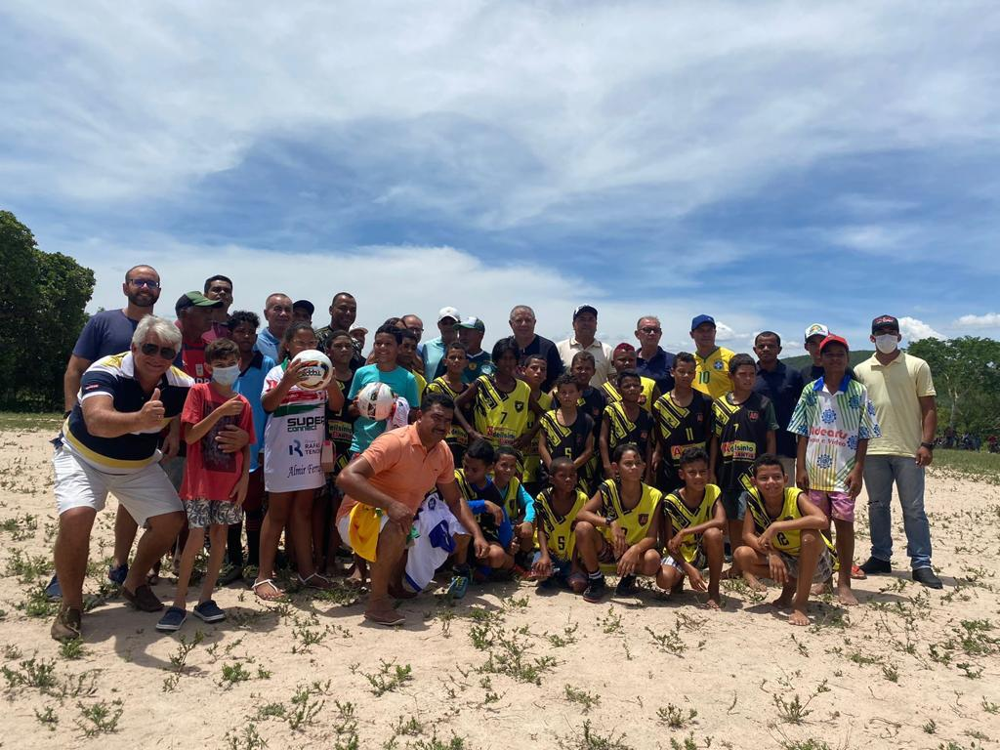

Uma boa história!
Marcos Evangelistas de Morais, o Cafu, não dispõe mais de sua fundação, fechada em 2019 após acúmulo de dívidas, mas tem viajado o Brasil e o mundo à frente de projetos sociais. O capitão do penta criou no ano passado o “Cafuzinhos do Sertão”, iniciativa que atende 30 famílias da cidade de Olho d’Água das Flores, no sertão de Alagoas. Cafu e Mariah Moraes, biógrafa do ex-jogador, presidente do Instituto Brilhante e também conectada a projetos sociais, estavam pesquisando cidades brasileiras com crianças cujo déficit de nutrição fosse alarmante. Miraram em Alagoas, estado com o pior Índice de Desenvolvimento Humano (IDH) do País e encontraram Olhos d’Água das Flores. Não sabiam que no pequeno município alagoano de clima árido já existia um projeto que usa o futebol como terreno de esperança para uma comunidade que tem fé de sobra, mas pouca assistência no povoado Pedrão. Incomodado com os jovens vagando pelas ruas, Manoel Ferreira dos Prazeres, aposentado de 60 anos, reuniu 35 crianças e as colocou para jogar futebol num campo de terra sempre aos sábados pela manhã. “Ele juntou essas crianças para fazer um time de futebol, mas eles não tinham nenhuma estrutura”, conta Mariah. Aí é que entrou Cafu. O ex-jogador fez contatos, arrumou parceiros e conseguiu uniformes, bolas e chuteiras para as crianças, estruturando o projeto. O campo de terra, com cactos em volta, será reformado. O gramado será sintético e haverá refletores para os meninos e meninas driblarem o calor do sertão e jogarem à noite.
‘Vou ficar feliz se o Dudu me passar em número de títulos’, diz Ademir da Guia
Atual camisa 7 ostenta 11 taças pelo Palmeiras e está a uma de igualar recorde do Divino
Uma boa história!
O título do Campeonato Paulista deste ano, conquistado neste último final de semana contra o Água Santa, fez o atacante Dudu ficar bem próximo de uma marca histórica no Palmeiras: igualar o número de taças daquele que é considerado o maior ídolo do clube, Ademir da Guia. O atual camisa 7 chegou a 11 troféus conquistados com a camisa alviverde, enquanto o Divino, protagonista nas Academias das décadas de 60 e 70, tem 12. Com a simplicidade que lhe é peculiar, Ademir da Guia, diz torcer para que Dudu supere seus feitos. “Eu vou ficar feliz se o Dudu me passar em número de títulos, pois ele ganhando, a equipe ganhando, todos nós palmeirenses continuaremos felizes”, disse o ex-camisa 10. “É bom que ele passe, porque quando ele estiver chegando mais perto as pessoas vão falar: ‘Ademir, ele está chegando’, e depois que ele passar, vão continuar falando: ‘Ademir, ele te passou’. Então eu também continuarei sendo lembrado”, justificou o Divino. Ademir da Guia se reuniu com Edu Bala e César Maluco, outros ídolos palmeirenses, no Braza, restaurante de alta gastronomia localizado no terceiro andar do Allianz Parque, para assistir à vitória da equipe de Abel Ferreira sobre a Tombense por 4 a 2, em duelo da terceira fase da Copa do Brasil. “As coisas vão acontecendo naturalmente neste time e ficamos contentes que estamos ganhando, não só partidas, mas títulos também. Essa é a essência de todo o torcedor palmeirense”, comentou.